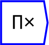
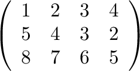
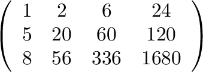

Computes the running product of the input tensor along a given axis.
The optional numerical argument (in the ``edit'' dialog) can be used to specify a window over which the running sum is performed. If negative, the window is over the entire dimension.
The operator can be placed on the canvas in two ways:

The running product of this tensor, along the horizontal dimension, is:

Running product will normally be applied to a Ravel or a variable defined via a Ravel.